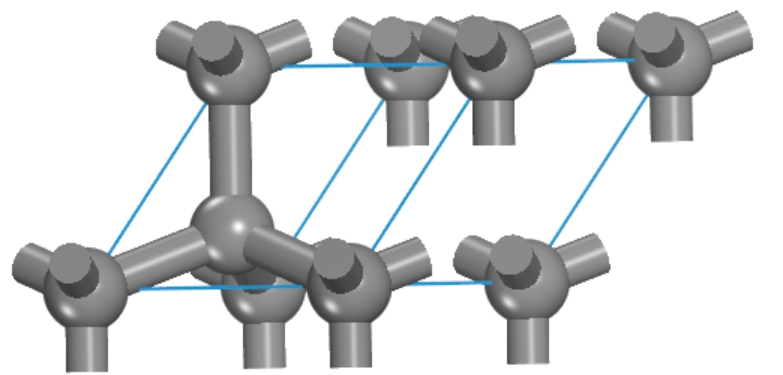

Getting Started
Taking an typical examples of optimizing the diamond.
Download the primitive cell of diamond (C.cif) and upload to Linux server.
Use qvasp to transfer C.cif to POSCAR:
> ls
C.cif
> qvasp -c2p C.cif
Transfer done of C.cif !
> ls
C.cif C.vasp POSCAR
> cat POSCAR
Transfer by qvasp
1.0
2.522100 0.000000 0.000000
1.261050 2.184203 0.000000
1.261050 0.728068 2.059286
C
2
Direct
0.000000 0.000000 0.000000
0.250000 0.250000 0.250000
Use qvasp to create INCAR, KPOINTS, POTCAR:
> qvasp -relax
The INCAR for structure optimization was generated successfully
> qvasp -k 0.03
The density of Brillouin zone is: 0.030 (2*PI/Angstrom)
The k-mesh was calculated as: 16 16 16
KPOINTS was created with k-kmesh: 16 16 16 due to the material dimension
> qvasp -pbe C
The POTCAR is produced successfully
Let's check it
TITEL = PAW_PBE C 08Apr2002
> ls
C.cif C.vasp INCAR KPOINTS POSCAR POTCAR
The density argument of qvasp -k is in 1/Angstrom: a larger number means a
coarser mesh. 0.03 gives a 16x16x16 mesh for this two-atom cell, which is
a reasonable starting point; halve it to 0.015 and you get 32x32x32 for a
convergence test. Without an argument the tool falls back to 0.03 and says so.
qvasp -k also detects the dimensionality of the structure: if a lattice
direction has a vacuum gap it sets the mesh along it to 1, which is what you
want for a slab or a 2D material. Use qvasp -3k 0.03 to switch the
detection off and force a three-dimensional mesh.
Note
Users should revised the ISIF=3 in INCAR file, if users want to optimize lattice constant and atomic position simultaneously.
The template writes ISIF = 2 (fixed cell) on purpose, because relaxing the
cell of a slab or of a 2D material is usually wrong.
Submit the job and use qvasp to check the status of job:
> qvasp -sub .
12345.mu01
> qvasp
-------------------------------------------------------------------------------------------------------
604 vasp6 R compute-0-5 /home/ywc/test
-------------------------------------------------------------------------------------------------------
qvasp -sub <dir> copies the job script from USERDefine/vasp* into the
folder as vasp.script and submits it with qsub, so a separate
subvasp command is not needed any more. Edit that template once for your
cluster before the first submission – it carries the queue name, the wall
time, the number of nodes and the absolute path of vasp_std, and all four
are machine specific. If qsub answers requested queue not found, the
#PBS -q line of USERDefine/vasp.pbs names a queue your scheduler does
not have.
Running qvasp with no argument prints the queue, which is the same as
qvasp -showstatus; see the queue section for the
scheduler-specific part.
Check the result of CONTCAR, or transfer CONTCAR to a cif file:
> ls
C.cif CHGCAR C.vasp EIGENVAL IBZKPT KPOINTS OSZICAR PCDAT POTCAR vasprun.xml XDATCAR
CHG CONTCAR DOSCAR hosts INCAR log OUTCAR POSCAR REPORT WAVECAR
> qvasp -p2c CONTCAR
Transfer structure from CONTCAR,Pleasewaiting...
Transfer it successfully!Please check test.cif!
> ls
C.cif CHGCAR C.vasp EIGENVAL IBZKPT KPOINTS OSZICAR PCDAT POTCAR test.cif WAVECAR
CHG CONTCAR DOSCAR hosts INCAR log OUTCAR POSCAR REPORT vasprun.xml XDATCAR
The output name is not fixed: qvasp -p2c writes <current folder name>.cif
(here the folder is called test, hence test.cif). The input name is an
optional argument – without it the tool asks for it interactively.
Use Materials Studio or VESTA to virtualize test.cif:

